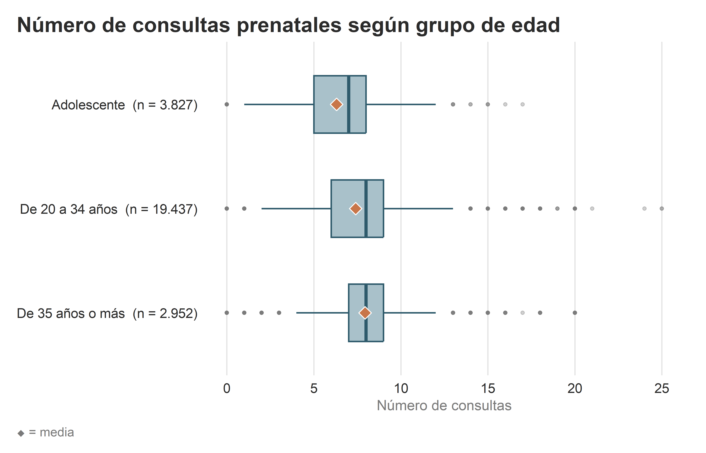
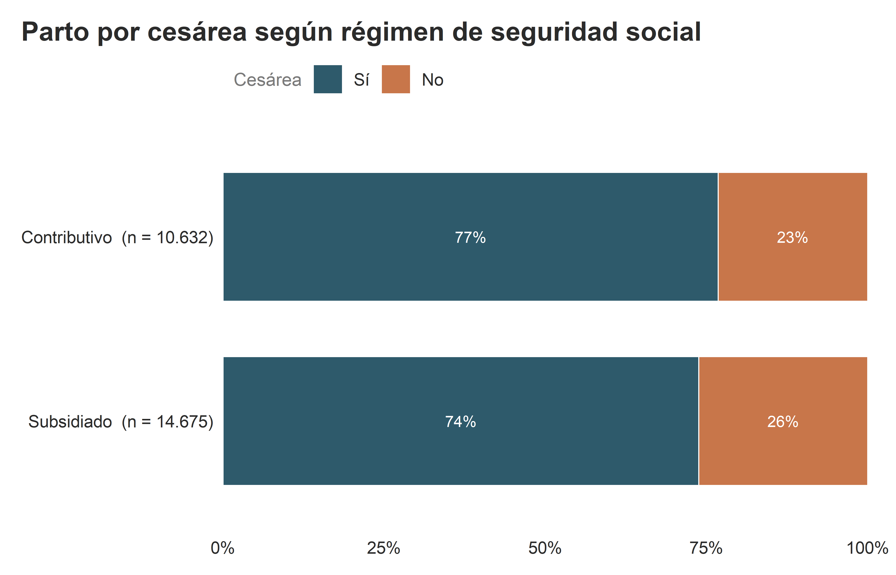
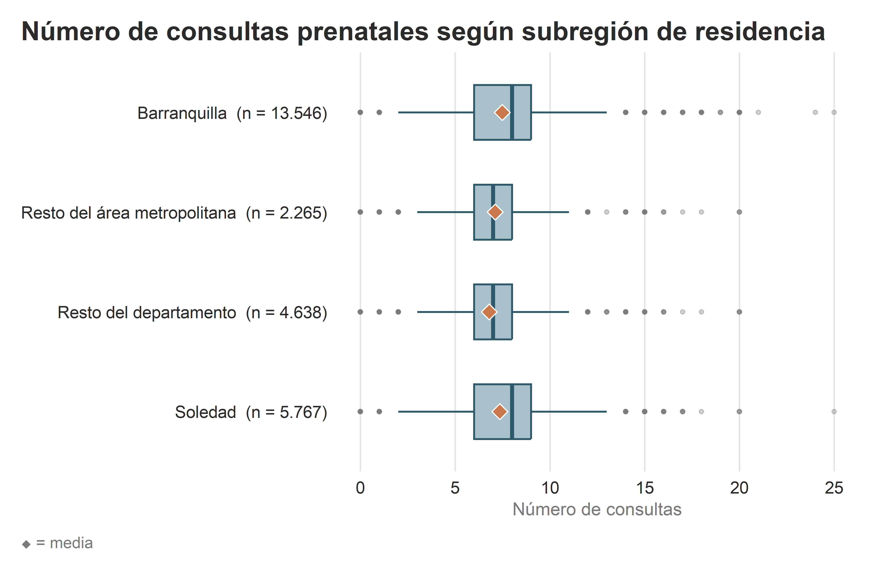
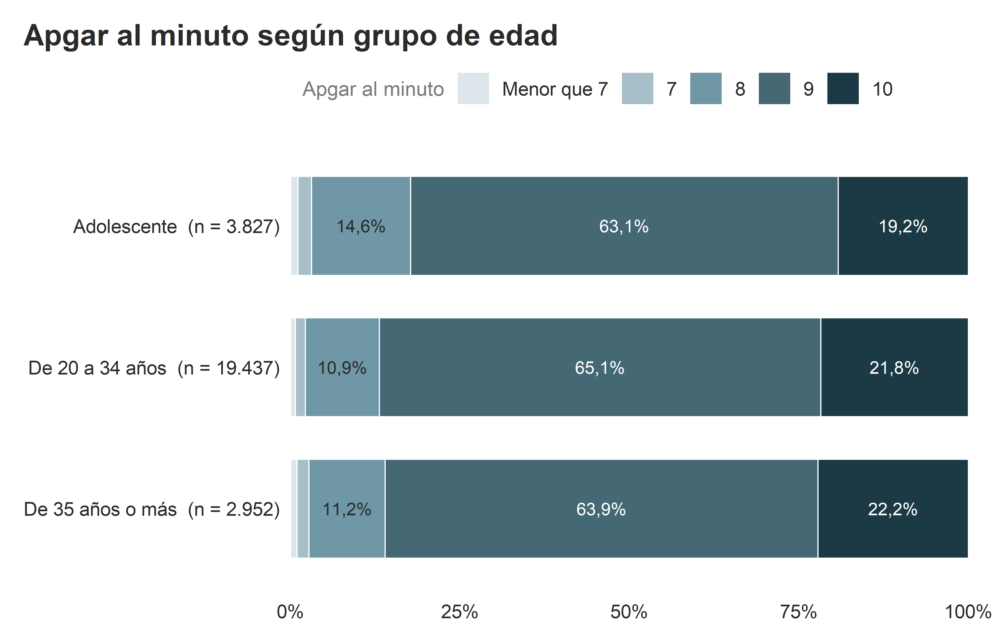
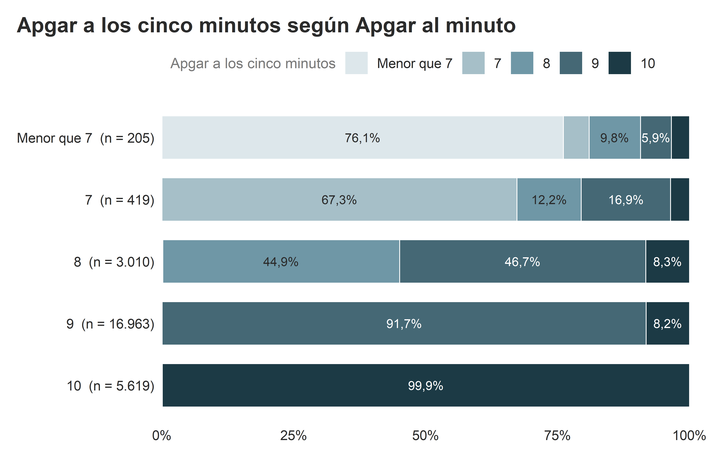

Capítulo 4 Análisis bivariado
4.1 Número de consultas prenatales según la edad
| Número de consultas según grupo de edad | |||||||
| Grupo de edad | n | Media | DE | Mediana | RIC (Q1–Q3) | Mín | Máx |
|---|---|---|---|---|---|---|---|
| Adolescente | 3.827 | 6,31 | 2,26 | 7 | 5 – 8 | 0 | 17 |
| De 20 a 34 años | 19.437 | 7,40 | 2,26 | 8 | 6 – 9 | 0 | 25 |
| De 35 años o más | 2.952 | 7,94 | 2,53 | 8 | 7 – 9 | 0 | 20 |
La tabla anterior muestra el número de consultas según la edad de la madre. Se observó una media de 6,31 (DE 2,26) para las madres adolescentes, menor frente a las madres adultas: las de 20 a 34 años con media 7,40 (DE 2,26) y las de 35 años o más con media 7,94 (DE 2,53). Las medianas fueron 7 (RIC 5 – 8) en adolescentes, 8 (RIC 6 – 9) en las de 20 a 34 años y 8 (RIC 7 – 9) en las de 35 años o más.

Figura 4.1: Número de consultas prenatales según grupo de edad de la madre.
En el boxplot se observó la caja del grupo adolescente ligeramente a la izquierda respecto a los grupos de edad adulta. La media (rombo) se ubica levemente a la izquierda de la mediana en el grupo adolescente y en el de 20 a 34 años, mientras que en el grupo de 35 años o más visualmente no se puede apreciar una diferencia.
4.2 Cesáreas según el régimen de salud
Se comparan los dos regímenes con mayor volumen, contributivo y subsidiado. Los 909 nacimientos de otros regímenes o de madres no aseguradas quedan por fuera de la comparación.
| Parto por cesárea según régimen de seguridad social | |||
| Régimen |
Cesárea
|
Total | |
|---|---|---|---|
| Sí | No | ||
| Contributivo | 8.167 (76,8%) | 2.465 (23,2%) | 10.632 (42,0%) |
| Subsidiado | 10.830 (73,8%) | 3.845 (26,2%) | 14.675 (58,0%) |
| Porcentajes por fila. | |||
En el régimen contributivo, 8.167 nacimientos (76,8%) fueron por cesárea y 2.465 (23,2%) no. En el subsidiado, 10.830 (73,8%) fueron por cesárea y 3.845 (26,2%) no.

Figura 4.2: Proporción de partos por cesárea dentro de cada régimen de salud.
4.3 Número de consultas prenatales según la subregión de residencia
| Número de consultas según subregión de residencia | |||||||
| Subregión | n | Media | DE | Mediana | RIC (Q1–Q3) | Mín | Máx |
|---|---|---|---|---|---|---|---|
| Barranquilla | 13.546 | 7,48 | 2,40 | 8 | 6 – 9 | 0 | 25 |
| Soledad | 5.767 | 7,36 | 2,29 | 8 | 6 – 9 | 0 | 25 |
| Resto del área metropolitana | 2.265 | 7,11 | 2,30 | 7 | 6 – 8 | 0 | 20 |
| Resto del departamento | 4.638 | 6,80 | 2,15 | 7 | 6 – 8 | 0 | 20 |
Barranquilla registró el promedio más alto de consultas, 7,48 (DE 2,40), y el resto del departamento el más bajo, 6,80 (DE 2,15). Mientras que para Soledad y el resto del área metropolitana quedaron en 7,36 (DE 2,29) y 7,11 (DE 2,30), respectivamente. El 50% de las madres de Barranquilla y Soledad tuvo al menos 8 (RIC 6 – 9 para ambas) consultas, mientras que el 50% de las madres del resto del área metropolitana y el resto del departamento tuvo al menos 7 (RIC 6 – 8 para ambas) consultas.

Figura 4.3: Número de consultas prenatales según subregión de residencia de la madre.
Para el resto del área metropolitana se observa una media ligeramente a la derecha de la mediana, y en el resto del departamento ligeramente a la izquierda, aunque en ambos casos la diferencia apenas se distingue. En cambio, en Barranquilla y Soledad la media queda claramente a la izquierda de la mediana. Se registran valores atípicos en todas las subregiones, tanto para conteos bajos como para altos.
4.4 Apgar al minuto según la edad de la madre
| Apgar al minuto según grupo de edad | ||||||||
| Grupo de edad | n | Media | DE | Mediana | RIC (Q1–Q3) | Mín | Máx | Apgar menor que 7 |
|---|---|---|---|---|---|---|---|---|
| Adolescente | 3.827 | 8,96 | 0,80 | 9 | 9 – 9 | 1 | 10 | 1,10% |
| De 20 a 34 años | 19.437 | 9,05 | 0,71 | 9 | 9 – 9 | 1 | 10 | 0,69% |
| De 35 años o más | 2.952 | 9,04 | 0,75 | 9 | 9 – 9 | 1 | 10 | 0,95% |
En los tres grupos de edad la mediana del Apgar al minuto fue de 9. El promedio fue de 8,96 en las madres adolescentes, 9,05 en las de 20 a 34 años y 9,04 en las de 35 o más. El puntaje menor que 7 se presentó en el 1,10% de los nacimientos de madres adolescentes, frente al 0,69% y el 0,95% de los otros dos grupos.

Figura 4.4: Distribución del puntaje Apgar al minuto dentro de cada grupo de edad.
4.5 Apgar al minuto y a los cinco minutos
| Cambio del puntaje Apgar entre el primer y el quinto minuto | ||
| Puntaje a los cinco minutos frente al del minuto | n | % |
|---|---|---|
| Mejoró | 3.241 | 12,4% |
| Se mantuvo | 22.956 | 87,6% |
| Empeoró | 19 | 0,1% |
Entre el primer y el quinto minuto de vida, 3.241 recién nacidos (12,4%) mejoraron su puntaje Apgar, 22.956 (87,6%) lo mantuvieron y 19 (0,1%) lo empeoraron.
| Apgar a los cinco minutos según Apgar al minuto | ||||||
| Apgar al minuto |
Apgar a los cinco minutos
|
Total | ||||
|---|---|---|---|---|---|---|
| Menor que 7 | 7 | 8 | 9 | 10 | ||
| Menor que 7 | 156 (76,1%) | 10 (4,9%) | 20 (9,8%) | 12 (5,9%) | 7 (3,4%) | 205 (0,8%) |
| 7 | 0 (0,0%) | 282 (67,3%) | 51 (12,2%) | 71 (16,9%) | 15 (3,6%) | 419 (1,6%) |
| 8 | 2 (0,1%) | 3 (0,1%) | 1.351 (44,9%) | 1.405 (46,7%) | 249 (8,3%) | 3.010 (11,5%) |
| 9 | 0 (0,0%) | 0 (0,0%) | 8 (0,0%) | 15.562 (91,7%) | 1.393 (8,2%) | 16.963 (64,7%) |
| 10 | 1 (0,0%) | 0 (0,0%) | 1 (0,0%) | 2 (0,0%) | 5.615 (99,9%) | 5.619 (21,4%) |
| Porcentajes por fila. | ||||||
Los cambios se concentraron en los puntajes intermedios. De los recién nacidos con 8 al minuto, el 46,7% pasó a 9 y el 8,3% a 10. En cambio, los que tuvieron 9 o 10 al minuto casi siempre conservaron ese puntaje a los cinco minutos (91,7% y 99,9%, respectivamente).

Figura 4.5: Distribución del Apgar a los cinco minutos según Apgar al minuto.